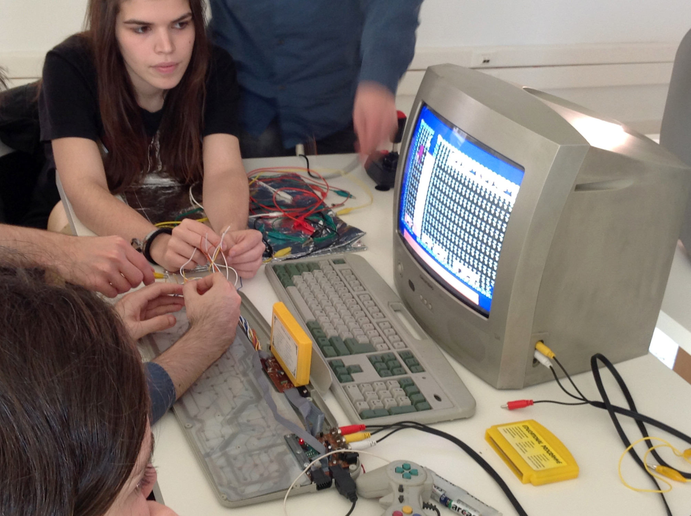

Games to the people
Citizen Lab at Future Places, Porto, 2015
Coordination - Pedro Cardoso, Inês Castanheira #link
Developing musical/sonorous and visual instruments with video games.
The goal of this workshop is to demonstrate how obsolete or outdated video game consoles can be used to perform sonorous/musical and visual compositions, initiating participants in simple principles of DIY, hardware hacking and circuit bending practices. In the first part of the workshop, the participants are instructed in how to hack the provided hardware. In the second moment, they create their own version of the instrument, applying the newly acquired skills.
